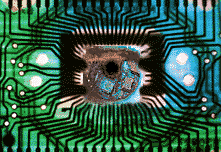
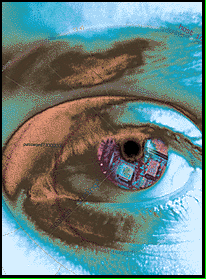

Where is this anti-privacy mother lode? It's hiding in the log files of the computers that are running the Internet.
That's because computers on the Internet need to know where your message is going in order to deliver it properly. Even if you send a message via an anonymous remailer, at some point, the address must be decrypted for it to be delivered to your internet service provider's computer and dropped into your electronic mailbox.
There's the rub. In addition to delivering your message into its mailbox, the destination computer also records that the message was delivered. Many internet computers store that fact in a file known as a syslog. (Take a look at Figure 1 for a few lines from the syslog at vineyard.net.) The syslog doesn't make for good bedtime reading...unless you're a detective.
Look closely at the first few lines of Figure 1, and you'll see that I was hard at work on Friday, December 1, sending e-mail to my friend (bbennett@vineyard.net), my editor (IU@mcs.com), and to some guy named Rick Ramsey at Sun Microsystems. (My messages are all sent out within a few seconds of each other because I set Eudora to ship outgoing mail every 10 minutes.) A few moments later, there's a return message from Mailer Daemon at Sun, indicating that Rick doesn't work there anymore. I also got mail from 73534.1367@ compuserve.com, whoever that is.
 That's a lot of information for just a few lines of text. It doesn't tell you what I've said, but it lets you know with whom I am communicating. Map out the frequency of messages, their size, or correlate it with the time of day (all parts of a science called traffic analysis), and you can distinguish my personal contacts from my business connections, figure out who is close to me and come up with a list of my known associates.
During World War II, Hitler's SS used these techniques to analyze telephone records, which made it easier for the Germans to round up members of the underground. To prevent that from ever happening again, most European telephone systems do not record the numbers called by telephone subscribers. One side effect:There's no way to get an itemized bill. Such is the price of privacy.
What's scary about the Internet today is that we are repeating the mistakes of pre-war Europe. Our systems are creating large repositories of personal transaction information. In many cases, these so-called "log files" are archived, saved on tape and never really deleted.
Programs on the Internet called "Web servers" provide the information to Web browsers such as Netscape's Navigator. One of the most popular Web servers is the NCSA server. This nifty program, affectionately called httpd, has three very important log files:
- access_log - a file that logs every access to the server, including the name of the site making the access, the
name of the file that was requested, the time of the access, and other interesting data
- error_log - all of the files that were requested that don't exist.
- refer_log - all of the links that point to the links on the current server.
- agent_log - a list of all of the programs that have contacted the server.
These log files are derived from the information provided by HTTP, the Hyper-Text Transfer Protocol. It's surprising the amount of anti-privacy information that's in HTTP. For example, HTTP has provision to send the e-mail address of the person making each request. Today, most Web browsers don't do this, but that's likely to change. That's because many of the companies giving away browsers hope to make their real money by selling servers. What company wouldn't want the e-mail addresses of those accessing their site?
 Even without e-mail addresses, it's easy to determine where a particular HTTP request originates. TCP/IP protocols have a form of caller-ID built in: Whenever a Web server receives a connection from a computer on the network, it automatically knows the Internet address. When I worked at MIT Media Lab, my computerës name was daily-bugle.media.mit. edu. I was the only person who used daily-bugle regularly, so if you saw that computer's name in a log file, it was likely I was the one using it. These days, many people at large companies and universities have their own IP addresses, so it's even easier.
The refer_log is another source of privacy violations. It works like this: Whenever you access a Web server for a new page, one of the pieces of information that is sent along is the URL of the page that you are currently looking at. (The HTTP specification says that sending this information should be an option left up to the user, but I have never seen a browser where sending the refer info is optional.)
One of the main uses that companies have found for the refer_log is to gauge the effectiveness of advertisements that they pay for on other web sites. Another use is charting how customers move through a site. But it also reveals the URL of the page that a user hyperlinked from.
Researchers at the World Wide Web consortium have found another use of the refer_log: determining reader's predilections. Web search engines such as Lycos encode the user's search query inside the URL, then stores it in the refer_log. What's funny, I'm told, is that an astonishing number of people searching for pages about sex have been downloading the web specs for "MIME body parts." What's disturbing is that the refer_log can be correlated with the access_log to determine the names of the people searching for the good porn...or anything else. NCSA's latest web server software stores the refer info directly in the access_log, making it all the easier to violate people's privacy.
All of the trends on the Internet are to decrease user privacy, rather than increase it. Take Netscape's new "cookie" technology (http://www.netscape. com/newsref/std/cookie_spec.html for more info). Cookies allow a server to download a cookie with a secret code into your Web browser, effectively giving Webmasters an easy way to mark their readers with an indelible marker. Each time you revisit the site, the server will know that it's you.
Ever have a Web site greet you by name? As the commercials say, "You will."
Simson Garfinkel runs the service provider vineyard.net from his home on Martha's Vineyard.